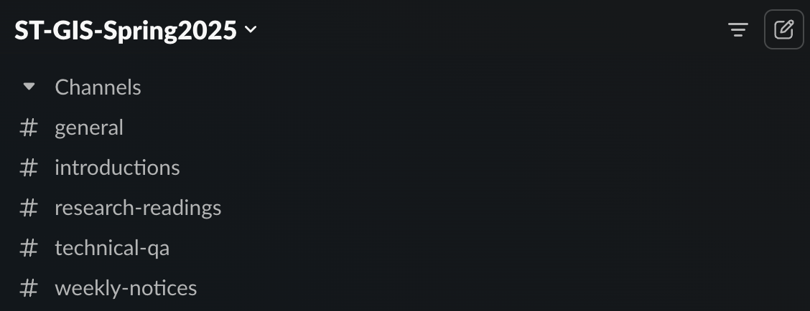
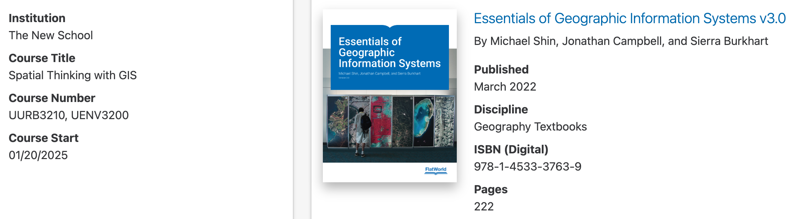
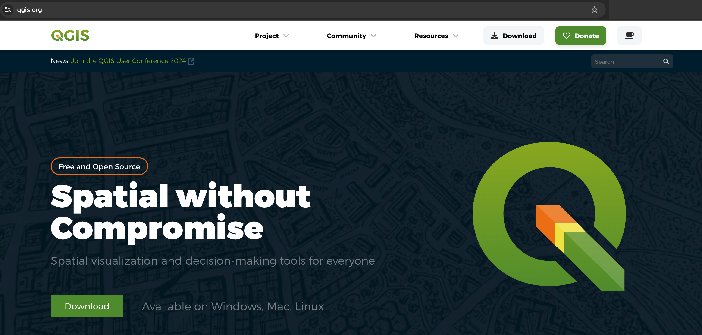
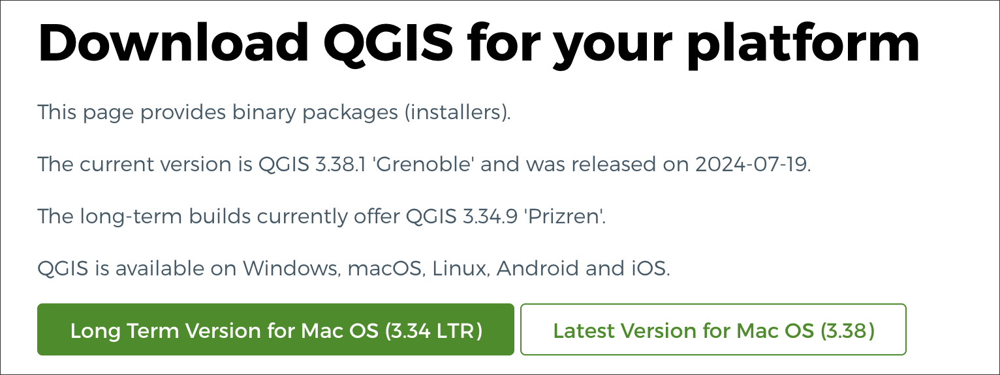

Spatial Thinking with GIS: Course Introduction
Spring 2025 | UENV3200 + UURB3210 | CRN: 11008 + 11009
 Source: https://atlas.developmentseed.org/all/ | Connectivity Atlas
Source: https://atlas.developmentseed.org/all/ | Connectivity Atlas
Faculty Instructor
- Stephen Metts | The School for Public Engagement: International Affairs
Introduction
Welcome to Spatial Thinking with GIS, Spring Semester 2025
I’m looking forward to meeting you as follows on the first day of class:
- Date: Monday 01/27/25
- Time: 4:00pm - 6:40pm
- Location: Room 706, 16th Street Building
During the first class meeting, we will accomplish the following:
- Faculty and Student Introductions
- Review course organization, essential materials and objectives.
- Preview course software platforms, primarily QGIS.
- Preview of the core lab approaches for efficient processing.
- Load QGIS onto student labtops (if available).
- Explore the QGIS Software Interface.
To ensure you are ready, please review the following documents and bring any questions that you may have to the first class:
- Course Introduction (this document)
- Course Syllabus
- Course Expectations & Requirements
- Instructor Email
- Course Calendar
The course interface will be accessed via CANVAS within My New School. Here you will find:
- Core class documents
- Weekly content, data and assignments
- In-class quizzes & labs
- Upload location for weekly assignments
- Weekly announcements
Weekly materials will appear online at Canvas, generally on Mondays at 7AM, on a weekly basis.
The actual weekly content endpoints, accessed via CANVAS, are housed at GitHub which is fully accessible, and can be downloaded on a weekly basis. If you would like to augment the online access for the course (available through 05/31/2025), you can easily print to PDF from a browser and save a copy of the assignment on your machine. You can also download the whole course repository at GitHub.
If you do download the GitHub repository, make sure to do it towards the end of the course as all materials will then be fully revised, tailored and posted for the Spring semester, 2025.
Course Communication
For course communication, we will utilize Slack. Our team name is GIS STGIS - SPRING 2025 and can be accessed directly:
There is also a direct invite link to the Slack workspace (please do not share with others outside the course) - INVITE
this invite will expire quickly so if you are unable to access the team via the link, contact instructor for an updated invite link. The instuctor can also add you directly if you request.
If you are new to Slack, there is a overview guide at lynda.com available to New School students for free as follows:
Once you have navigated to the Slack Team - ST-GIS-Spring2025 and completed signup, send a hello to the class at the introductions channel. The following channels are available to the class, and each has a purpose as follows:

- general - location to post links, references, ect. that do not fit into more narrow channels.
- introductions - location to initialize yourself to the course Slack, and introduce yourself to the class.
- research-readings - location for research links, papers, references on a weekly basis.
- technical-qa - where the bulk of activity will happen over the course. here is the location to post technical questions that arise during weekly assignments. This channel is monitored by instructor; but students should be as active as possible here, helping fellow students solve technical issues as they arise.
- weekly-notices - if there is an issue the needs to be addressed not tied to weekly technical issues or details in syllabus and course materials, it will be posted here.
Data Storage and Backup
In addition CANVAS and the Slack workspace for the course, materials and software will be provided to complete all technical components of the course. As we move along throughout the course, you will start to accumulate significant spatial data. We will review early in the course data management protocols for spatial data; however, all this data will have to be housed somewhere when you are not immediately accessing and working with it in spatial software. To really cover all basis, a physical backup SSD drive coupled with digital online backup is highly recommended. Some good online storage options (one of which you may very likely already use) include:
Course Textbook
The course will feature a theory framework in which each week’s technical work will be conducted. This component will require a textbook purchase. There are several delivery options available. The title is as follows. The purchase can be accomplished via the following share link:

You are welcome to purchase the download and print versions; however, the only required purchase is the online access version priced at $36.95.
Weekly Quizzes
Weekly readings will be conducted within the Essentials of Geographic Information Systems textbook; most weeks will then feature a weekly quiz for each week’s theory readings in the textbook. Quizzes open each Monday, and will cover the previous week’s content. Students can take the quiz anytime on Mondays leading up to each week’s lecture session on Monday evenings.
The first quiz will not occur until the 3rd class meeting which falls on Monday, February 3rd. This will allow a grace period to make sure you have time to arrange access to the course text.
Course Software
The primary course software will be QGIS.

As part of the second week’s assignment, we will download the QGIS software and become familiar with its interface as well as working with spatial data in the vector model. It is assumed that you either have full access to labs on campus that have QGIS installed and/or you have your own machine with enough processing capacity and storage necessary for QGIS to run efficiently. We will discuss early in the course some of the options you might want to use: a combination of lab computers with your own computer; strictly your own machine or strictly the lab computers. Importantly and beneficially, flexibility exists with open source, nonproprietary software - as is indeed the case with QGIS.

QGIS has many versions of the software available. Of particular note are the current Long Term Release vs the Latest release. We will be using the Long Term Release - known as the ‘LTR’ version of QGIS which for the Fall 2024 term is QGIS 3.34.9 'Prizren' also known as simply QGIS 3.34. Note also that you have can have multiple versions on one machine. We will be using the ‘LTR’ as this version is the best balance between recent, contemporary features and the least number of bugs/errors that can interrupt performance.